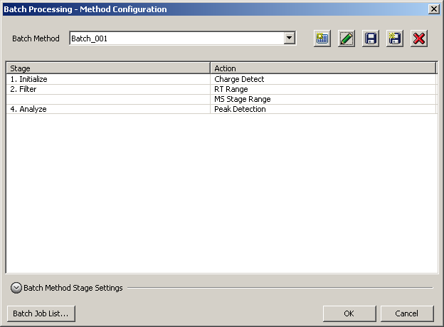
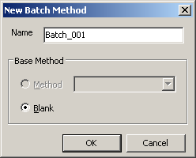
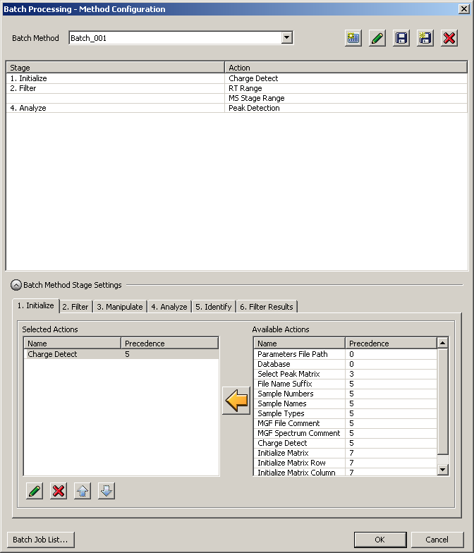
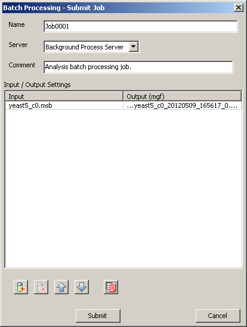
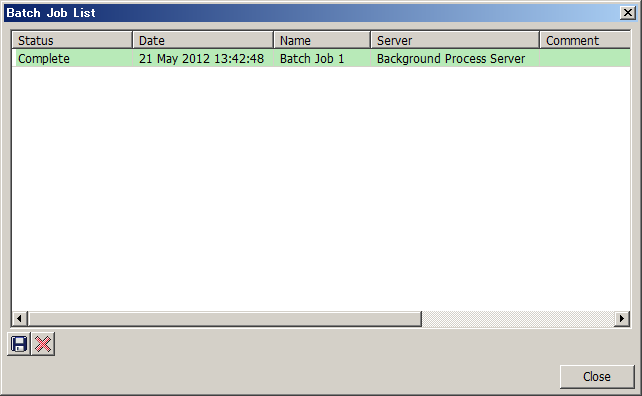

Select [Tools] in the menu bar and then select [Batch Processing] from the drop down menu.
The Batch Processing - Method Configuration dialog appears.
Click the icon.
The New Batch Method dialog appears.
Enter the name and click [OK].
You can select the batch method to be used as the base for the new batch method from the drop down menu.
Click [Batch Method Stage Settings].
Add actions to the batch method.
Enter the necessary parameters if a dialog appears after clicking the
 icon and click [OK].
icon and click [OK].
Click the icon to delete the selected action from the batch method.
Click the
 icon or the icon to change the order of the selected action.
icon or the icon to change the order of the selected action.
Note that actions may not be moved above actions with a lower precedence, and may not be moved below actions with a higher precedence.
Click [OK].
The Batch Processing - Submit Job dialog appears.
Click the icon to select the target samples.
Click the icon to select the output formats.
Click [Submit].
The Batch Job List dialog appears.
Click the icon to export the contents of the Batch Job List to a text file.
Click the icon to delete a batch job.